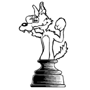

Herzlich willkommen beim SV Wolfbusch
Unser 1956 gegründeter Verein gehört mit seinen 180 Mitgliedern zu den größten Vereinen im Deutschen Schachbund. Die Hälfte aller Vereinsmitglieder ist unter 20 Jahre alt. An den Verbandsspielen nehmen wir mit 7 Mannschaften, von der Verbandsliga bis zur B-Klasse, teil. Bei den Frauen spielen wir in der 2.Bundesliga und sind mit führend in Württemberg.
Mannschaften
Wir starten in die Saison 2025/26 mit einer neu gegründeten Jugendmannschaft in der Verbandsjugendliga Württemberg U20. Unsere Frauenmannschaft spielt in der 2. Frauenbundesliga. Zudem vertreten sechs weitere Mannschaften den Verein von der Verbandsliga Nord bis zur B-Klasse Stuttgart-Mitte.
More
News
30.06.2022
Gabriele Häcker ist die erste Internationale Schiedsrichterin Deutschlands
More
30.06.2022
Jacqueline Kobald ist Deutsche Vizemeisterin U18w // Yibo Zhang startet in seine erste DEM U10
More
30.06.2022
Einladung zur Generalversammlung am 15.07.2022 um 20 Uhr
More
Spielabend
Spielabend Kinder
Freitags 16:00 - 17:15
Spielort:
Altes Pfarrhaus, Ditzingerstr.7
70499 Stuttgart-Weilimdorf
Spielabend Jugendliche
Freitags 17:15 - 20:00
Spielort:
Altes Pfarrhaus, Ditzingerstr.7
70499 Stuttgart-Weilimdorf
Spielabend Erwachsene
Freitags ab 20:00
Spielort:
Altes Pfarrhaus, Ditzingerstr.7
70499 Stuttgart-Weilimdorf